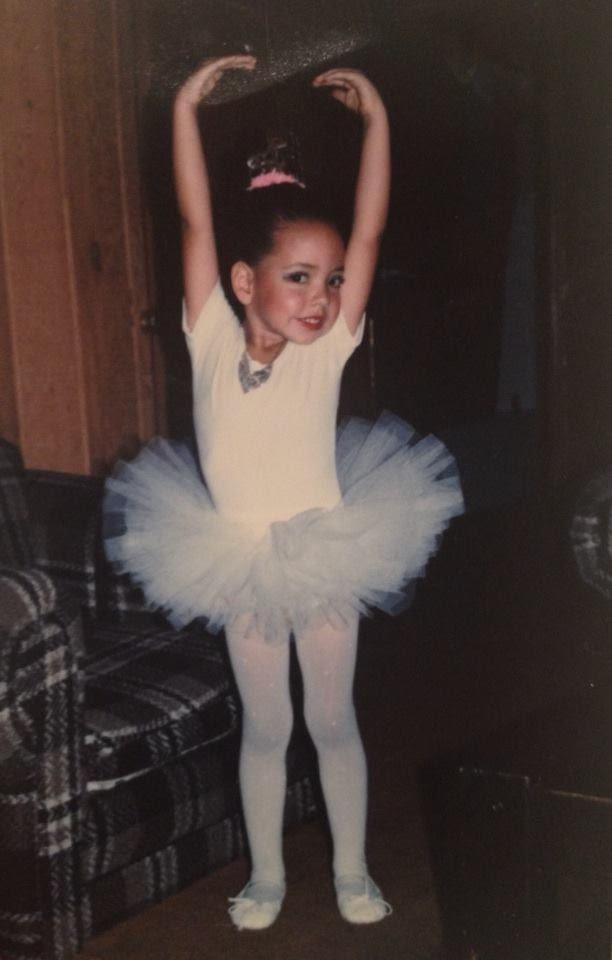

Senior brand designer and art director. Fifteen years across agency and in-house, from press-ready production art to campaigns that ran on Times Square.
Each discipline kept apart on purpose. Jump to the one you came for, or keep scrolling.
Broadcast and online film. Art direction from board to cut, including a Ford campaign that passed four million views.
Client decks and pitch documents — layout systems that hold up across twenty slides, not just the cover.
Paid placements with a fixed size and a media buy behind them, as opposed to the feed. Art directed and taken through to press-ready or trafficked files.
{{ g.blurb }}
Adapting one set of approved assets into every size a launch needs, without losing the licensor’s rules or the art director’s intent — and rebuilding the art when it won’t survive the resize. The discipline I learned first, and the one behind the Paramount+ and Miramax key art work.
Marks shown with the thinking attached — the rounds that lost, and why the one that shipped won. Open a project to step through the exploration.
Where a mark becomes a system: palettes with CMYK, RGB and hex specified, type pairings at real sizes, photography direction, and the written rationale a client needs to run the brand without me.
Ford · Netflix · Sony · FX · FXX · Miramax · Mattress Firm · UGG · Epson · Paramount+ · Lionsgate · Laugh Out Loud · Children's Hospital LA · City of West Hollywood · LA Tourism · UHealth · Sit N' Sleep · Bank of Hawaii · CRC · San Diego Zoo · Veggie Grill · Occidental College
Designer, art director and production artist. I brainstorm the idea, plan how it should work, and deliver files that are ready to print.
I studied advertising at ArtCenter in Pasadena and art direction at BookShop in Santa Monica. I started at M&C Saatchi as a production artist, then designed for UGG, Fox, FXX and Veggie Grill and art directed a digital campaign for Epson. Since then I’ve worked on Netflix, Disney and Xbox at Midnight Oil, on Ford in Dearborn, on key art for Paramount+ and Miramax, and on pitch decks for feature films and series.

English, Spanish and Armenian, taught through play and field trips — numbers, animals, colors, and the phrases you actually use. Alongside it, the harder curriculum: naming a feeling before it turns into a scene.
It has made me faster, more direct, and much harder to rattle by a round of feedback.
A set I designed and had printed to teach her the Armenian alphabet — letters, the word that goes with each one, and art she'll actually sit still for. Placeholder copy: send me the details and card photos and I'll set this properly.
ROOSTANDCRAYONS.COM →
Social
Made for the feed: organic and campaign posts for FXX, FOX, DISH and restaurant accounts. Quote cards, polls, carousels and post templates built to repeat on a weekly calendar, in English and Spanish.